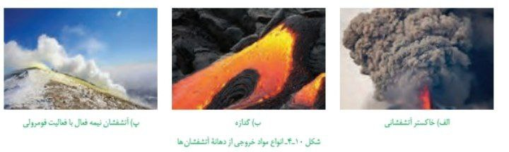

مواد خروجی از آتشفشان
تفرا (جامد):
ذرات ریز و درشتی که بر اثر انفجار به هوا پرتاب میشوند. مانند توف سبز البرز.
گدازه (مایع):
مواد مذاب روی سطح زمین. غلظت آن به مقدار سیلیس ($SiO_2$) بستگی دارد.
فومرول (گاز):
بخار آب، $CO_2$ و گازهای گوگردی. آتشفشان دماوند و تفتان در این مرحله هستند.

فواید فعالیتهای آتشفشانی
۱. مطالعه درون زمین:
پنجرهای برای شناخت مستقیم ترکیب پوسته و گوشته بالایی.
۲ و ۳. تشکیل هواکره و آبکره:
خروج گازها و بخار آب در گذشته، اتمسفر و اقیانوسها را به وجود آورد.
۴. تشکیل خاک حاصلخیز:
خاکسترهای آتشفشانی مزارع غنی (مثل قهوه در جزیره جاوه) ایجاد میکنند.
۵. تشکیل پوسته جدید:
خروج بازالت در پشتههای میان اقیانوسی، بستر دریاها را نوسازی میکند.

انرژی و اقتصاد
- انرژی زمینگرمایی (Geothermal): ایسلند پیشرو در این انرژی است. در ایران، نخستین نیروگاه در نزدیکی آتشفشان سبلان (اردبیل) بنا شده است.
- چشمههای آب گرم: درمان بیماریهای پوستی، آرامش عضلانی و رونق گردشگری (توریسم درمانی).
- رگههای معدنی: تشکیل ذخایر طلا، نقره و مس در اطراف مناطق آتشفشانی.
- مصالح ساختمانی: استفاده از سنگهای آذرین در نمای ساختمانها و زیرسازی جادهها.